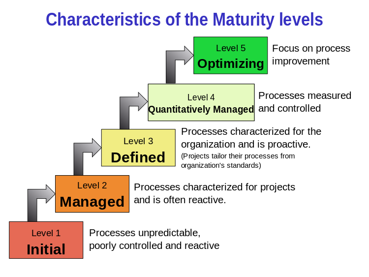

简答题:
1. 软件工程的定义:
软件工程是研究和应用如何以系统性的、规范化的、可定量的过程化方法去开发和维护软件，以及如何把经过时间考验而证明正确的管理技术和当前能够得到的最好的技术方法结合起来的学科。它涉及到程序设计语言、数据库、软件开发工具、系统平台、标准、设计模式等方面。
维基收集的其他几种定义:
- "the systematic application of scientific and technological knowledge, methods, and experience to the design, implementation, testing, and documentation of software"—The Bureau of Labor Statistics—IEEE Systems and software engineering - Vocabulary
- 用于设计，完成，测试和编写文档的 科学与技术的知识，方法和经验的 系统性运用
- "The application of a systematic, disciplined, quantifiable approach to the development, operation, and maintenance of software"—IEEE Standard Glossary of Software Engineering Terminology
- 开发，操作和维护软件的 系统性，规律性，可量化的途径的 运用
- "an engineering discipline that is concerned with all aspects of software production"—Ian Sommerville
- 考虑所有软件生产方面的工程规律
- "the establishment and use of sound engineering principles in order to economically obtain software that is reliable and works efficiently on real machines"—Fritz Bauer
- 用于经济地得到可靠，高效，可以在真正机器上运行的软件的 合理工程规律的建立和使用
2. 解释导致 software crisis 本质原因、表现，述说克服软件危机的方法
Software crisis is a term used in the early days of computing science for the difficulty of writing useful and efficient computer programs in the required time. The software crisis was due to the rapid increases in computer power and the complexity of the problems that could not be tackled. With the increase in the complexity of the software, many software problems arose because existing methods were insufficient.
软件危机是一个概念，指早期计算科学遇到难以在需求时间内写出有用高效的软件的困难。软件危机由计算机能力快速提升，以及问题复杂性难以解决。随着软件复杂度提高，由于现存方法不足，许多软件问题出现。
The major cause of the software crisis is that the machines have become several orders of magnitude more powerful! To put it quite bluntly: as long as there were no machines, programming was no problem at all; when we had a few weak computers, programming became a mild problem, and now we have gigantic computers, programming has become an equally gigantic problem. — Edsger Dijkstra, The Humble Programmer (EWD340), Communications of the ACM
软件危机产生的主要原因是机器的能力得到了几个数量级的提升！直截了当地说，没有机器时，根本没有编程问题；当我们有一些计算能力弱的计算机时，编程成为了一个温和的问题；现在我们有大量强大的计算机，编程也成为了巨大的问题。
解决方法:
- 用现代工程的概念，原理，技术和方法进行计算机软件的开发，管理和维护
- 研制和使用软件工具，用以辅助进行软件项目管理与技术生产
- 将软件生命周期各阶段使用的软件工具有机地集合成为一个整体，形成能够连续支持软件开发与维护全过程的集成化软件支援环境，以期从管理和技术两方面解决软件危机问题
3. 软件生命周期
A software release life cycle is the sum of the stages of development and maturity for a piece of computer software: ranging from its initial development to its eventual release, and including updated versions of the released version to help improve software or fix software bugs still present in the software.
软件发布生命周期是几个阶段的总和，有开发阶段，单个软件成熟阶段: 从最初开发到最终发布, 包括用于修复仍然存在的bug的发布版的升级版本。
4. SWEBoK 的 15 个知识域（An Overview of the SWEBOK Guide 请中文翻译其名称与简短说明）
知识领域特征化软件工程实践(Knowledge Areas Characterizing the Practice of Software Engineering):
- Software requirements(软件需求)
软件需求知识域主要涉及软件需求的引导、协商、分析、规范和确认过程。当这些过程执行得不好时，软件工程项目是极为脆弱的，这一点在软件行业得到了普遍认可。软件需求表示对软件产品的需求和约束，这些需求和约束有助于解决现实世界中的一些实际问题。
- Software design(软件设计)
软件设计被定义为定义系统或组件的架构、组件、接口和其他特性的过程，以及该过程的结果(IEEE 1991)。软件设计知识域覆盖了设计过程和最终产品。软件设计过程是软件工程生命周期活动，在该活动中分析软件需求，以便对软件的内部结构及其行为进行描述，作为其构建的基础。软件设计的结果必须描述软件架构——也就是软件是如何分解和组织成组件的，以及这些组件之间的接口。它还必须在细节层次上描述组件，以实现其构造。
- Software construction(软件构造)
软件构造是指通过详细设计、编码、单元测试、集成测试、调试和验证的组合来详细创建工作软件。软件构造知识域包括与满足其需求和设计约束的软件程序开发相关的主题。软件构造知识域涵盖软件构建基础知识、管理软件构建、构建技术、实践考虑和软件构建工具。
- Software testing(软件测试)
软件测试是一项评估产品质量并通过识别缺陷来改进产品质量的活动。软件测试涉及根据有限的测试用例集上的预期行为对程序行为进行动态验证。这些测试用例是从(通常非常大)执行域中选择的。软件测试知识域包括软件测试的基础知识、测试技术、人机界面测试和评估、测试相关措施和实际考虑。
- Software maintenance(软件维护)
软件维护包括增强现有的能力，使软件适应新的和修改过的操作环境，以及纠正缺陷。这些类别被称为完善的、适应性的和纠正性的软件维护。软件维护知识域包括软件维护的基础知识（维护的性质和需要、维护的类别、维护成本），软件维护中的关键问题（技术问题、管理问题、维护成本估算、软件维护的测量），维护过程，软件维护技术(程序理解、重新设计、逆向工程、重构、软件退役)，灾难恢复技术和软件维护工具。
- Software configuration management(软件配置管理)
系统的配置是硬件、固件、软件的功能和/或物理特性，或这些特性的组合。它还可以被视为硬件、固件或软件项的特定版本的集合，根据特定的构建过程进行组合以满足特定的目的。因此，软件配置管理（SCM）是一门在不同的时间点识别系统配置的学科，目的是系统地控制配置的更改，并在整个软件生命周期中保持配置的完整性和可追溯性。软件配置管理知识域包括对SCM过程的管理，软件配置识别、控制、状态记录、审核，软件发布管理和交付以及软件配置管理工具。
- Software engineering management(软件工程管理)
软件工程管理包括计划、协调、测量、报告和控制项目（程序），以确保软件的开发和维护是系统的、有纪律的和量化的。软件工程管理知识域包括启动和范围定义(确定和协商需求、可行性分析以及需求的评审和修订)，软件项目规划(过程规划、工作量、成本和进度估算、资源分配、风险分析、质量规划)，软件项目投资(测量、报告和控制，采购和供应商合同管理)，产品验收，项目绩效的审查和分析，项目验收以及软件管理工具。
- Software engineering process(软件工程过程)
软件工程知识域涉及软件生命周期过程的定义、实现、评估、测量、管理和改进。所涵盖的主题包括过程实施和变更（过程基础设施、过程实施和变更模型以及软件过程管理)，过程定义（软件生命周期模型和过程、过程定义的注释、过程适应和过程自动化)，过程评估模型和方法，度量（过程测量、产品测量、测量技术和测量结果质量)和软件过程工具。
- Software engineering models and methods(软件工程模型和方法)
软件工程模型和方法知识域描述了包含多个生命周期阶段的方法，特定于某个生命周期阶段的方法由其他知识域涵盖。该知识域所涵盖的主题包括建模（软件工程模型的原理和属性，语法，语义和不变量，前提条件、后置条件和不变量），模型类型（信息，结构和行为模型），分析（分析正确性、完整性、一致性、质量和交互，可追溯性和权衡分析）和软件开发方法（启发式方法、形式方法、原型方法和敏捷方法）。
- Software quality(软件质量)
软件质量是一个在软件生命周期中普遍存在的问题，在许多Swebok v3 知识域中都有解决方法。此外，软件质量知识域还包括了软件质量基础（软件工程文化，软件质量特征，软件质量的价值和成本以及软件质量改进），软件质量管理过程（软件质量保证、验证和确认、评审和审计）以及实践中的注意事项（缺陷描述、软件质量度量和软件质量工具）。
- Software engineering professional practice(软件工程专业实践)
软件工程专业实践涉及软件工程师在实践软件工程中所必须具备的知识、技能和态度。软件工程专业实践知识域涵盖专业性（专业行为，专业协会，软件工程标准，雇佣合同和法律问题），道德规范，群体动力学（团队合作，认知问题复杂性，与利益相关者互动，处理不确定性和模糊性，在多元文化环境处理问题）以及沟通技巧。
知识领域特征化软件工程教育需求(Knowledge Areas Characterizing the Educational Requirements of Software Engineering):
- Software engineering economics(软件工程经济学)
软件工程经济学知识域关注于在业务环境中做出决策，以使得技术决策与组织的业务目标保持一致。所涵盖的主题包括软件工程经济学基础（提案，现金流，货币时间价值，规划范围，通货膨胀，折旧，重置和退休决策），非营利决策（成本效益分析，优化分析），估算，经济风险和不确定性（估算方法，在风险和不确定性下的决策）以及多属性决策（价值和测量尺度、补偿和非补偿方法）。
- Computing foundations(计算基础)
计算基础知识域涵盖了为软件工程实践提供必要计算背景的基本主题。所涵盖的主题包括问题解决方法，抽象，算法和复杂性，编程基础，并行和分布式计算基础，计算机组成，操作系统和网络通信。
- Mathematical foundations(数学基础)
数学基础知识域涵盖了为软件工程实践提供必要数学背景的基本主题。所涉及的主题包括集合、关系和函数，基本命题和谓词逻辑，证明方法，图和树，离散概率，语法和有限状态机以及数论。
- Engineering foundations(工程基础)
工程基础知识域涵盖了为软件工程实践提供必要工程背景的基本主题。所涉及的主题包括了经验方法和实践技术，统计分析，测量和度量，工程设计，模拟和建模以及根本性原因分析
5. 简单解释 CMMI 的五个级别。例如：Level 1 - Initial：无序，自发生产模式。

- lv 1: 初始级(Initial)：软件开发过程是无序的，有时候甚至是混乱的，对过程几乎没有定义，管理是反应式的。是一种自发的生产模式
- lv 2: 可管理级(Managed)：建立了基本的项目管理过程来跟踪费用、进度和功能特性，制定了必要的过程纪律，能重复早先类似应用项目取得的成功经验。
- lv 3: 已定义级(Defined)：已将软件管理和工程两方面的过程文档化、标准化，并综合成该组织的标准软件过程。所有项目均使用经批准、剪裁的标准软件过程来开发和维护软件，软件产品的生产在整个软件过程是可见的。
- lv 4: 量化管理级(Quantitatively Managed)：分析对软件过程和产品质量的详细度量数据，对软件过程和产品都有定量的理解与控制。管理有一个作出结论的客观依据，管理能够在定量的范围内预测性能。
- lv 5: 优化管理级别(Optimizing)：过程的量化反馈和先进的新思想、新技术促使过程持续不断改进。
6. 用自己语言简述 SWEBok 或 CMMI （约200字）
SWEBok: 软件工程知识主体是一个国际标准指定的指导，被广泛接受的软件工程知识体，由几个专业体系和工业成员合作创立，并由IEEE发布。主要目的有:
- 促进世界范围内对软件工程的一致观点
- 澄清软件工程与其他相关学科如计算机科学、项目管理、计算机工程以及计算机数学的关系，并且确定软件工程学科的范围
- 反映软件工程这个学科内容的特征
- 确定软件工程本体知识的各个专题
- 为相应的课程和职业资格认证材料的编写奠定基础
CMMI: 能力成熟度模型集成由一个来自工业、政府和CMU软件工程研究所（SEI）的小组开发, 为开发或改进满足组织业务目标的流程提供指导, 也可用作评估组织过程成熟度的框架。CMMI是一个模型，而不是一个标准。换句话说，对于实践的每一个领域，它都以抽象的方式指定了一个一般的意图和不同的成熟度水平；它没有提供如何达到这些水平的处方。但是它确实提供了详细的抽象信息和示例，这些信息和示例可以作为理解和实现的指导方针，但是具体的实现方式取决于组织。